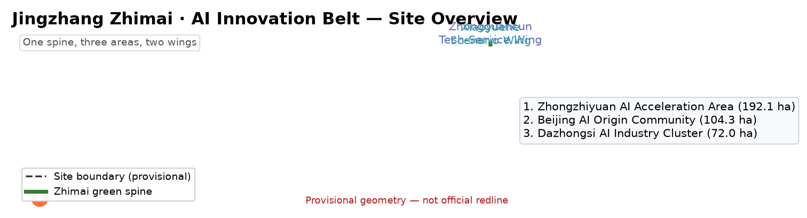
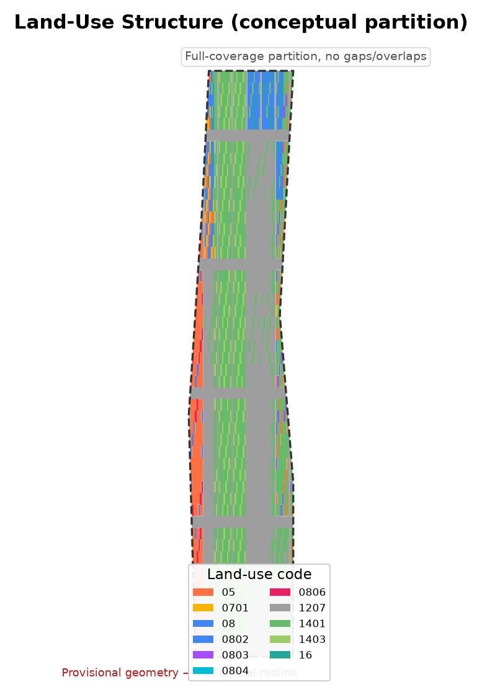
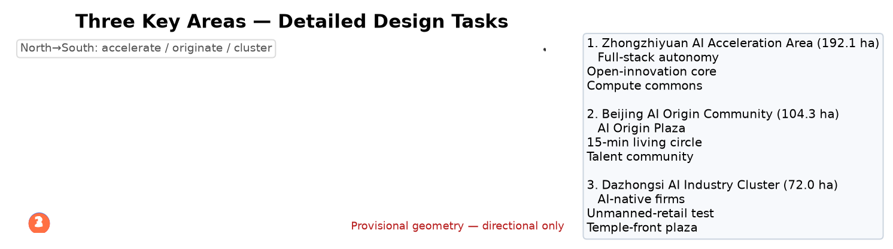
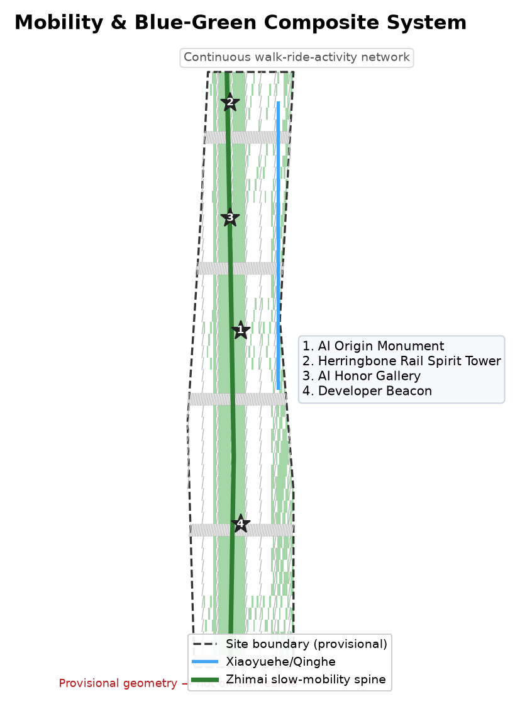
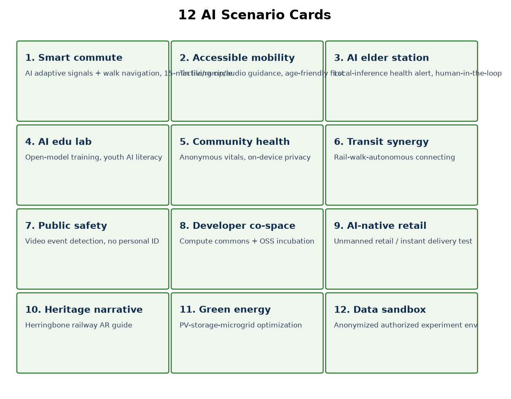
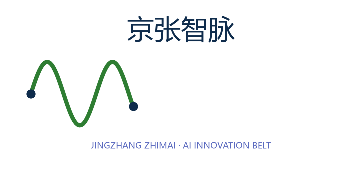
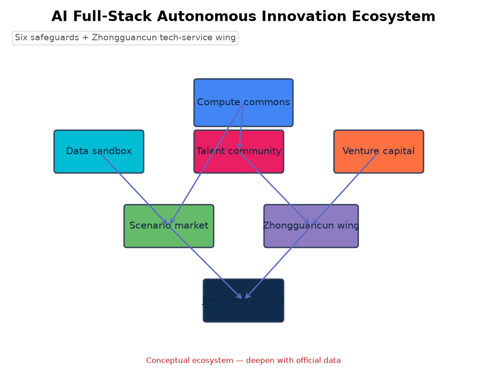
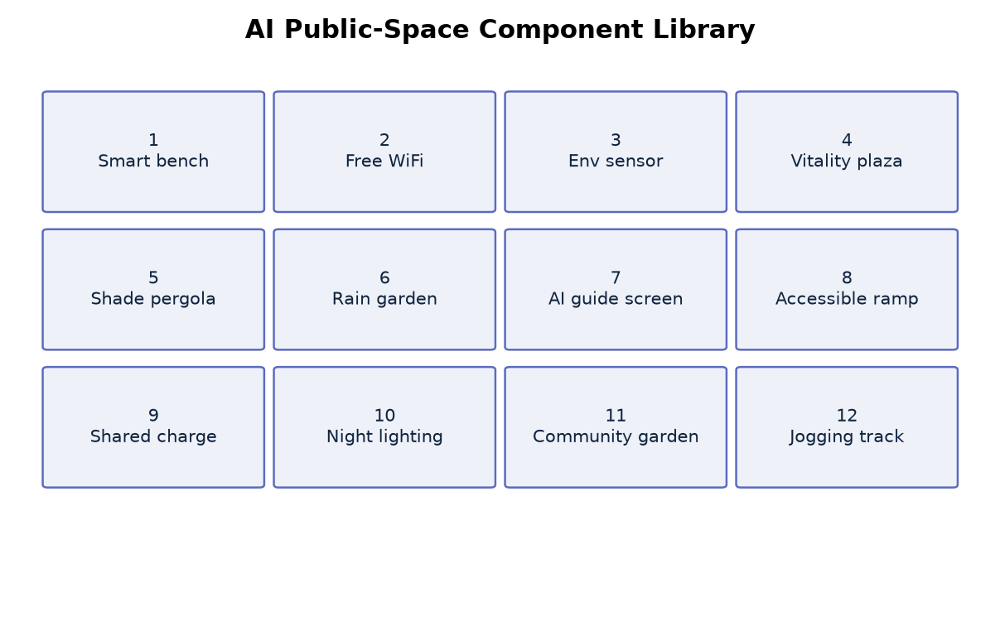
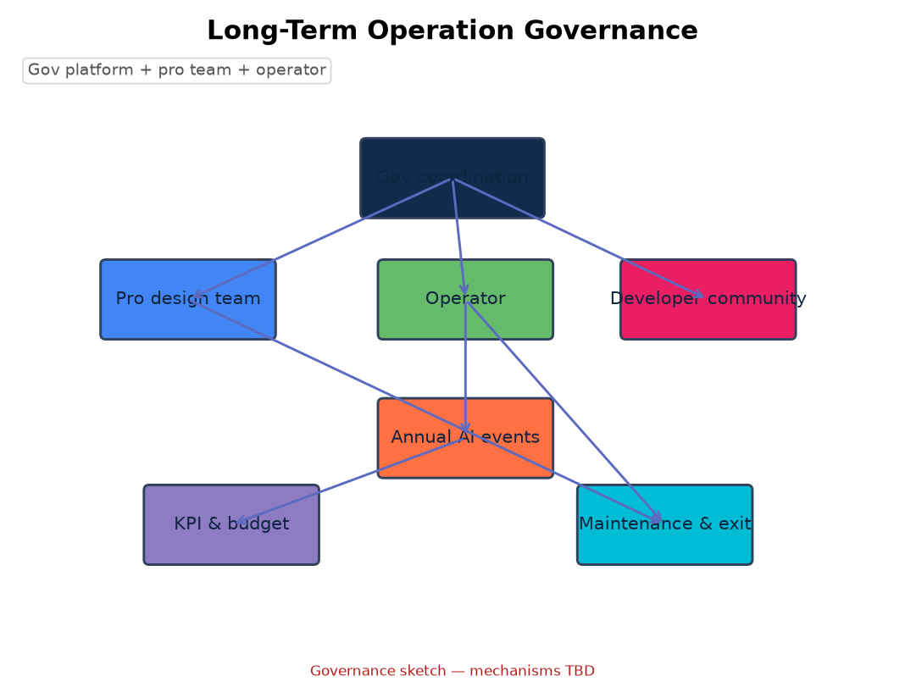
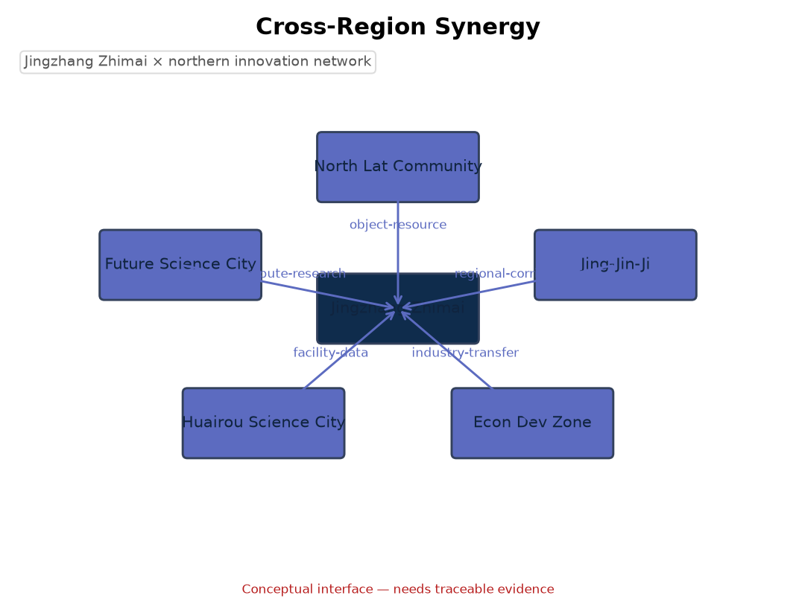

Centennial Jingzhang AI Innovation Belt Open Call · formal package (provisional geometry)

One spine, three areas, two wings.

Coordinated ~43.6 km²; overall design ~11.4 km²; key detail ~368.4 ha.

Zhongzhiyuan 192.1 ha / AI Origin 104.3 ha / Dazhongsi 72.0 ha.
Full-coverage conceptual partition per MNR 2023.

Zhimai slow-mobility spine + Xiaoyuehe blue-green + transit.
Green ratio 38.4% / public-space ratio 8.0%.
Building scale & retain/renovate/demolish are conceptual; pending regulatory plan.
Near/mid/long-term phasing by latitude band.

12 scenario cards · 6 personas · 4 validation scenarios.
Recomputed from geometry (local metric projection, approx EPSG:4548).
agent.1–agent.6 covered; announcement §1.3/1.4/1.5.
Local four-gate self-check PASS; provisional geometry, pending official polygon.
Official announcement / cleared taskbook / public standards / provisional boundaries.
All spatial & operational proposals are conceptual; statutory controls missing, listed as pending.
由 geometry/land_use.geojson 在本地度量投影下复算；临时边界。
| 任务 | 内容 | 状态 |
|---|---|---|
| agent.1 | 一带总体概念与功能统筹 | 已覆盖 |
| agent.2 | AI全栈自主创新生态 | 已覆盖 |
| agent.3 | AI+场景赋能 | 已覆盖 |
| agent.4 | AI公共空间与朝圣地标 | 已覆盖 |
| agent.5 | 百年京张—中关村—AI新文化 | 已覆盖 |
| agent.6 | 全球AI创新活动与长期运营 | 已覆盖 |




